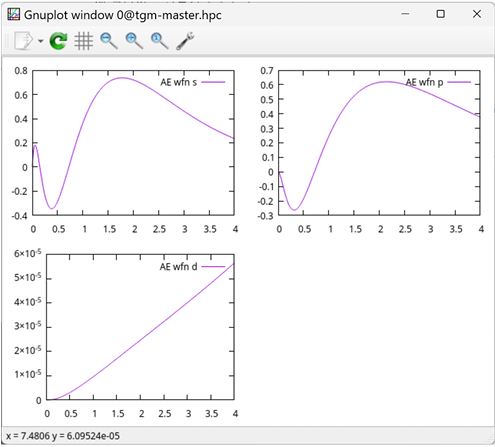
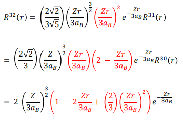
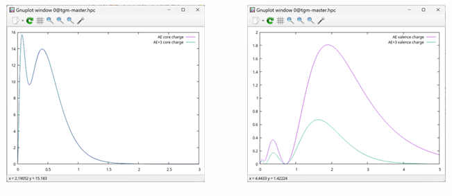
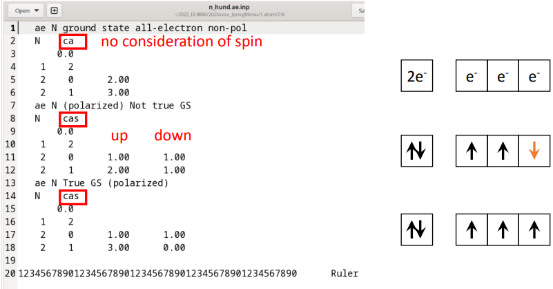
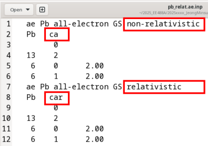

전(全)전자 (All electron) 계산
Contents
- 전(全)전자 계산 실행
- 전하 밀도 및 파동함수 분석
- 전자 배치에 따른 물리적 특성 비교
• Ionization
• Hund's rule
• Relativistic effect
1. 전(全)전자 계산 실행
이번 장에서는 원자에 대해 밀도범함수론(density functional theory, DFT) 기반의 전(全)전자(all-electron) 계산을 수행하고, 얻어진 결과를 이용하여 전자 배치 변화에 따른 에너지 차이를 비교한다. 이를 통해 이온화 효과, Hund’s rule, spin polarization이 실제 계산에서 어떻게 나타나는지를 확인한다.
우선, ATOM이 설치된 위치에서 /Tutorial/1.atom에 위치한 다음 파일을 살펴보자:
cd Tutorial/1.atom/1.Si
vi Si.ae.inp
Si.ae.inp:
ae Si Ground state all-electron # 계산 종류 (ae : All-electron) / 시스템 이름
Si ca # 원소기호 / Exchange correlation 종류 (ca : non-realistic)
0.0
3 2 # 핵(core) 오비탈 수 (1s, 2s, 2p) / 원자가(valence) 오비탈 수 (3s, 3p)
3 0 2.00 # 주 양자수(n) / 방위 양자수(l) / 전자 수
3 1 2.00
12345678901234567890123456789012345678901234567890 Ruler
전체-전자 계산을 수행하기 위해서는 /Tutorial/1.atom/bin/ 위치에 있는 ATOM 프로그램에 대한 쉘 스크립트를 사용해야한다. 다음과 같은 명령어로 계산을 수행한다.
$ sh ../bin/ae.sh si.ae.inp
=> si.ae 폴더 생성
생성된 si.ae 위치에 가면 다음과 같은 결과 파일들이 생성되어 있다:
• INP: 계산에 사용된 입력 파일 사본
• OUT: 계산 결과 정보를 담은 출력 파일
• AECHARGE: 전자 밀도(multiplied by 4πr²)
• CHARGE: AECHARGE와 동일
• RHO: 전자 밀도
• AEWFNR0 ~ AEWFNR3: 원자가 전자에 대한 온전자 파동함수(s, p, d, f 오비탈 순)
OUT 파일을 살펴보면 다음과 같은 계산 결과 정보를 알수 있다:
오비탈 고유값:
Si output data for orbitals
----------------------------
nl s occ eigenvalue kinetic energy pot energy
1s 0.0 2.0000 -130.36911240 183.01377616 -378.73491463
2s 0.0 2.0000 -10.14892694 25.89954259 -71.62102169
2p 0.0 6.0000 -7.02876268 24.42537874 -68.74331203
3s 0.0 2.0000 -0.79662742 3.23745215 -17.68692611 &v
3p 0.0 2.0000 -0.30705179 2.06135782 -13.62572515 &v
---------------------------- &v
전체 에너지:
total energies
--------------
sum of eigenvalues = -325.41601319
kinetic energy from ek = 574.97652987
el-ion interaction energy = -1375.79704736
el-el interaction energy = 263.53000478
vxc correction = -51.65548902
virial correction = 1.40722950
exchange + corr energy = -39.09342414
kinetic energy from ev = 574.97651364
potential energy = -1151.36046672
---------------------------------------------
total energy = -576.38395308
2. 전하 밀도 및 파동 함수 분석
전전자 계산이 완료되면 생성된 결과 파일을 이용하여 전하 밀도와 파동함수를 시각화하고 각 오비탈의 물리적 특성을 확인한다.
2-1. 전하 밀도 (Charge density)
계산이 정상적으로 수행되면 다음과 같은 전하 밀도 파일이 생성된다.
RHO: 전자 밀도 \(𝜌(𝑟)\)
AECHARGE: \(4πr^{2}ρ(r)\)
AECHARGE는 구대칭 좌표계에서 전자 수 정규화를 확인하기 위해 사용된다.
$ gnuplot -persist charge.gplot
• core charge
• valence charge
{kind=link}
그래프를 통해 다음과 같은 특징을 확인할 수 있다.
Core charge
• 작은 r 영역에서 매우 큰 값을 가짐
• 핵 근처에 강하게 국소화
• 바깥쪽에서는 거의 0
즉, core 전자는 핵에 강하게 묶여 있으며 화학 결합에 거의 참여하지 않는다.
Valence charge
• 넓은 r 영역에 분포
• 원자 바깥쪽까지 퍼짐
즉, 실제 결합과 고체 내 전자 구조는 valence 전자가 결정한다.
2-2. 파동 함수 (Wave functions)
점유된 오비탈의 radial wavefunction은 AEWFNR*에 저장된다.
다음 명령어로 각 오비탈의 radial wavefunction을 확인한다.
$ gnuplot -persist ae.gplot
\(node = 𝑛−𝑙−1\)
예 : | 오비탈 | n | l | node | | ------ | --- | --- | ---- | | 1s | 1 | 0 | 0 | | 2s | 2 | 0 | 1 | | 2p | 2 | 1 | 0 | | 3s | 3 | 0 | 2 | | 3p | 3 | 1 | 1 |
 Radial wavefunction |
 Appllied Quantum Physices ch 11.3.2 |
|---|---|
{kind=link}
{kind=link}
3. 전자 배치에 따른 물리적 특성 비교
3-1. 이온화 (Ionization) 효과
원자의 이온화는 valence 전자의 점유수를 줄여서 구현한다.
예를 들어 Si 원자의 경우 3p 전자의 점유수를 감소시키면 양이온 상태가 된다.
입력 파일 수정 예 (si+3.ae.inp)
ae Si ionized state
Si ca
0.0
3 2
3 0 2.00
3 1 1.00
계산 실행
$ sh ../Utils/ae.sh si+3.ae.inp
확인할 항목
• 1. 전전자 계산 실행을 참고해 OUT 파일에서 total energy와 각 오비탈의 eigenvalue를 바닥상태(Si 원자)와 비교한다.
• 2-1. 전하 밀도 (Charge density)를 참고해 이온과 원자의 전하 밀도를 그래프로 비교한다.
$grep "total energy" OUT ../si.ae/OUT
$grep "&v" OUT ../si.ae/OUT
$vi OUT
혹은, vi 편집기로 OUT 파일을 직접 열어 확인하여도 된다.
OUT: total energy = -572.11808700
../si.ae/OUT: total energy = -576.38395308
OUT: ATM4.2.7 24-FEB-26 Si+3 all-electron &v&d
OUT: 3s 0.0 1.0000 -2.91134151 4.70531310 -20.88742446 &v
OUT: 3p 0.0 0.0000 -2.28096611 3.96140218 -18.58406372 &v
OUT: 3d 0.0 0.0000 -1.46351913 2.20057174 -13.78098842 &v
OUT:---------------------------- &v
../si.ae/OUT: ATM4.2.7 29-OCT-25 Si Ground state all-electron &v&d
../si.ae/OUT: 3s 0.0 2.0000 -0.79662742 3.23745215 -17.68692611 &v
../si.ae/OUT: 3p 0.0 2.0000 -0.30705179 2.06135782 -13.62572515 &v
../si.ae/OUT: 3d 0.0 0.0000 0.00000000 0.00140505 -0.27465437 &v
../si.ae/OUT:---------------------------- &v
• 전자를 제거하면 total energy는 증가한다.
• 남아 있는 오비탈의 eigenvalue는 더 낮아진다.
이는 전자 간 반발이 감소하여 각 전자가 더 강하게 핵에 묶이기 때문이다.
다음은 전하 밀도 비교를 위한 명령어들이다.
$mv AECHARGE AECHARGE+3
$cp ../si.ae/AECHARGE .
$cp ../../bin/*charge+3.gplot .
$gnuplot --persist charge+3.gplot
$gnuplot --persist vcharge+3.gplot

Left : Core charge / Right : Valence charge
{kind=link}
charge density를 비교하면 core charge에서는 큰 차이가 없으나, valence charge가 감소하고,
전자 분포가 더 안쪽으로 수축하는 경향을 확인할 수 있다.
3-2. 훈트 규칙 (Hund's rule) 검증
같은 전자 수를 가지면서 서로 다른 전자 배치를 갖도록 입력 파일을 구성한다.
이번엔 gedit 편집기를 통해 input 파일을 확인해본다.
$cd ../../2.N/
$gedit n_hund.ae.inp
{kind=link}

• ca : 비편극(non-pol) 계산 (스핀 분리 없이 점유수 1개만 입력)
• cas : spin-polarized 계산 (각 오비탈 점유수를 up down 두 개로 입력) 1. 비편극(non-polarized) 스핀을 구분하지 않고 평균 점유로 계산
-
편극(polarized), 하지만 Hund’s rule을 만족하지 않는 배치 (Not true GS) 2p 전자 중 일부를 반대 스핀으로 배치
-
편극(polarized), Hund’s rule을 만족하는 배치 (True GS) 2p 전자 3개를 가능한 한 평행 스핀으로 배치
이제 atom 계산을 완료한 OUT 파일을 확인해보자.
$sh ../bin/ae.sh n_hund.ae.inp
$cd n_hund.ae/
$grep '&v' OUT
ATM4.2.7 24-FEB-26 N ground state all-electron non-pol &v&d
2s 0.0 2.0000 -1.35223895 4.72576386 -15.36854475 &v
2p 0.0 3.0000 -0.53262229 3.67454481 -13.16757601 &v
---------------------------- &v
ATM4.2.7 24-FEB-26 N (polarized) Not true GS &v&d
2s -0.5 1.0000 -1.39519629 4.79286024 -15.47151390 &v
2s 0.5 1.0000 -1.29556323 4.63342348 -15.22530682 &v
2p -0.5 2.0000 -0.57343615 3.76365854 -13.34619495 &v
2p 0.5 1.0000 -0.47939843 3.54746816 -12.90953771 &v
---------------------------- &v
ATM4.2.7 24-FEB-26 N True GS (polarized) &v&d
2s -0.5 1.0000 -1.43729738 4.84605758 -15.55178094 &v
2s 0.5 1.0000 -1.13020569 4.37114549 -14.80898890 &v
2p -0.5 3.0000 -0.61368139 3.83046414 -13.48291553 &v
2p 0.5 0.0000 -0.32817063 3.15640727 -12.07989931 &v
---------------------------- &v
*----- End of series ----* spdfg &d&v
비편극에서는 하나의 2p
eigenvalue로 나타나지만, 편극 계산에서는 2p (s=-0.5)와 2p (s=+0.5)가 서로 다른 에너지로 나타난다.
이것이 훈트룰 논의에서 중요한 이유는 스핀 정렬(평행 스핀)이 허용되면 전자 간 교환 상호작용(exchange interaction) 때문에 에너지가 분리되고, 특정 점유배치가 더 안정해지기 때문이다.
$grep 'total energy' OUT
total energy = -108.04500744
total energy = -108.06850136
total energy = -108.25762866
case 3 (True GS, polarized)가 가장 안정
case 2 (polarized, Not true GS)는 그보다 덜 안정
case 1 (non-pol)가 가장 덜 안정 임을 알 수 있다.
이를 통해 DFT 전전자 계산을 통해 훈트 규칙(Hund’s rule)을 확인할 수 있다.
3-3. 상대론적 효과 (Relativistic effect)
무거운 원소에서는 핵 전하가 커서 핵 근처 전자(특히 s 전자)의 속도가 커지고, 상대론적 효과가 에너지에 유의미한 영향을 준다.
이 파트에서는 Pb(납) 원자에 대해
• 상대론적 효과 포함(relativistic) 전전자 계산
• 비상대론적(non-relativistic) 전전자 계산
을 각각 수행하고, eigenvalue 및 total energy를 비교하여 상대론적 효과의 크기를 확인한다.
cd ../../3.pb
ls
gedit pb_relat.ae.inp pb_non_relat.ae.inp
{kind=link}

• ca : 상대론적 효과 고려하지 않는 옵션
• car : 상대론적 효과 고려하는 옵션
sh ../bin/ae.sh pb_relat.ae.inp
sh ../bin/ae.sh pb_non_relat.ae.inp
2-1, 2-2를 활용해 두 전전자 계산 결과를 확인해보고 상대론적 효과를 고려하는 것과 안 한 계산의 차이를 확인해본다.